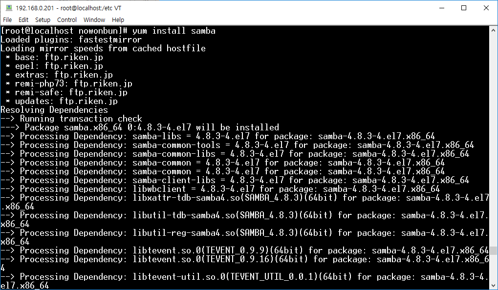
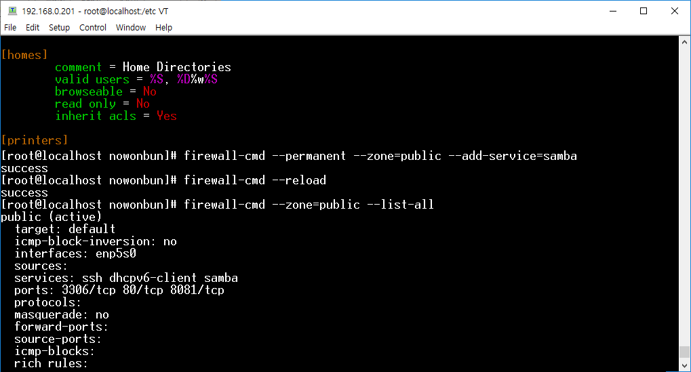
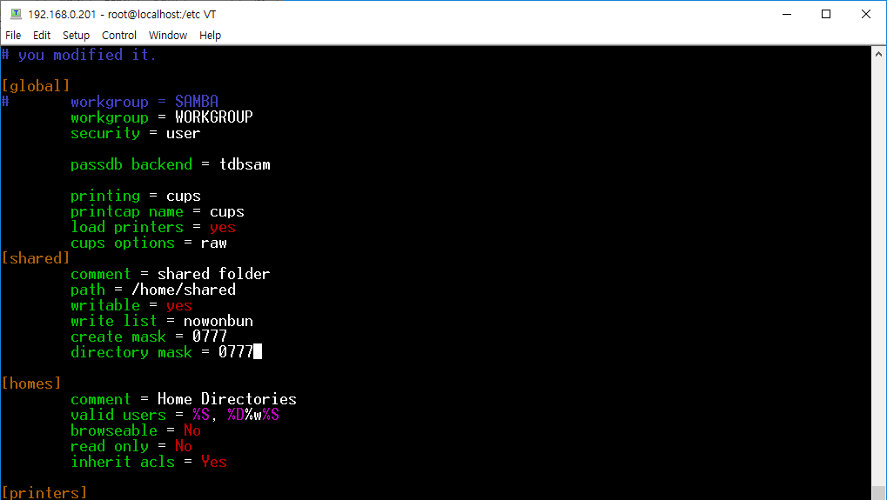
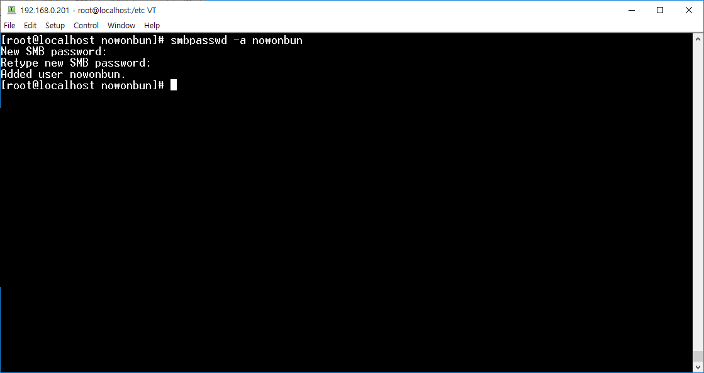
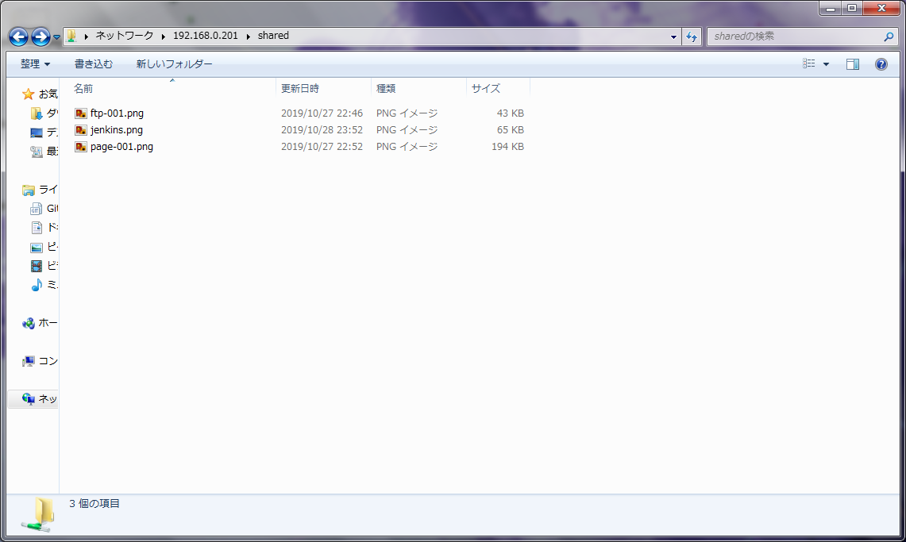

[CentOS] SAMBAインストール方法
Devlopment note / Linux 作成日付 : 2019/10/30 07:38:57 修正日付 : 2019/10/30 07:39:42
こんにちは。明月です。
会社や組織グループの中でよくいうネットワークドライブという格納の場所があります。
でも、ネットワークドライブではなく、正式なプロコール名は「samba」です。
SAMBAとは「Session Message Block」というプロトコールでCクラスネットワーク、すなわち192.168.0.1のIPを持っている環境なら、192.168.0.XXXの範囲でプリンターやファイルなどを共有するようなプログラムということです。
それでSAMBAをインストールしましょう。
yum install samba

インストールはyumを利用して簡単に完了しました。
ファイアウォールの解除と共有フォルダーを設定しましょう。
firewall-cmd --zone=public --list-all
firewall-cmd --permanent --zone=public --add-service=samba
firewall-cmd --reload
firewall-cmd --zone=public --list-all

解除されました。共有フォルダーを設定します。
cd /home
#フォルダー生成
mkdir shared
#権限設定
chmod 777 shared
#Samba設定ファイルを編集
cd /etc/samba
vi smb.conf
[global]
workgroup = WORKGROUP
security = user
passdb backend = tdbsam
printing = cups
printcap name = cups
load printers = yes
cups options = raw
[shared]
comment = First Shared Folder
path = /home/shared
public = yes
writable = yes
write list = ユーザid
create mask = 0777
directory mask = 0777

次はsambaパスワードを設定しましょう。このパスワードはサーバを接続パスワードではなく、samba接続パスワードです。
smbpasswd -a 接続 id

サーバが起動する時にsambaを起動するような設定をしましょう。
systemctl enable smb
systemctl list-unit-files | grep enabled
##samba 再起動
systemctl restart smb
参考にSELINUXで接続できない場合は解除する方法を下記通りです。
vi /etc/sysconfig/selinux
SELINUX=disabled

接続が確認できました。
「Devlopment note / Linux」の他投稿
- [Ubuntu] Chromeをインストールする方法2019/11/06 19:48:19
- [CentOS] YUMについて、YUMが出来ない場合処理方法2019/11/05 07:17:58
- [CentOS] MariaDB(Mysql)をインストール2019/11/04 18:35:10
- [CentOS] FTPインストールする方法(vsftpd)2019/11/01 07:29:57
- [CentOS] SAMBAインストール方法2019/10/30 07:38:57
- [CentOS] PHPインストールする方法2019/10/29 20:09:03
- [CentOS] ApacheとTomcatの連携2019/10/29 07:28:33
- [CentOS] Tomcat インストール方法2019/10/28 22:38:56
- [CentOS] Java インストール2019/10/28 00:22:32
- [CentOS] apacheをインストールする方法2019/10/25 21:43:27
- [Linux] ディスク使用率チェック(df, du, lsof)とdfバグを解決方法2019/10/24 21:46:31
- [CentOS] Wheel設定2019/10/23 23:53:40
- [CentOS] システムの文字セット変更2019/10/21 16:58:39
- [CentOS] Vim編集ツールをインストールする方法2019/10/21 00:24:44
- [Linux] Putty使用方法2019/10/20 00:42:54
最新投稿
- [Ubuntu] Chromeをインストールする方法2019/11/06 19:48:19
- [CentOS] YUMについて、YUMが出来ない場合処理方法2019/11/05 07:17:58
- [CentOS] MariaDB(Mysql)をインストール2019/11/04 18:35:10
- [CentOS] FTPインストールする方法(vsftpd)2019/11/01 07:29:57
- [CentOS] SAMBAインストール方法2019/10/30 07:38:57
- [CentOS] PHPインストールする方法2019/10/29 20:09:03
- [CentOS] ApacheとTomcatの連携2019/10/29 07:28:33
- [CentOS] Tomcat インストール方法2019/10/28 22:38:56
- [CentOS] Java インストール2019/10/28 00:22:32
- [CentOS] apacheをインストールする方法2019/10/25 21:43:27
- [Linux] ディスク使用率チェック(df, du, lsof)とdfバグを解決方法2019/10/24 21:46:31
- [CentOS] Wheel設定2019/10/23 23:53:40
- [CentOS] システムの文字セット変更2019/10/21 16:58:39
- [CentOS] Vim編集ツールをインストールする方法2019/10/21 00:24:44
- [Linux] Putty使用方法2019/10/20 00:42:54